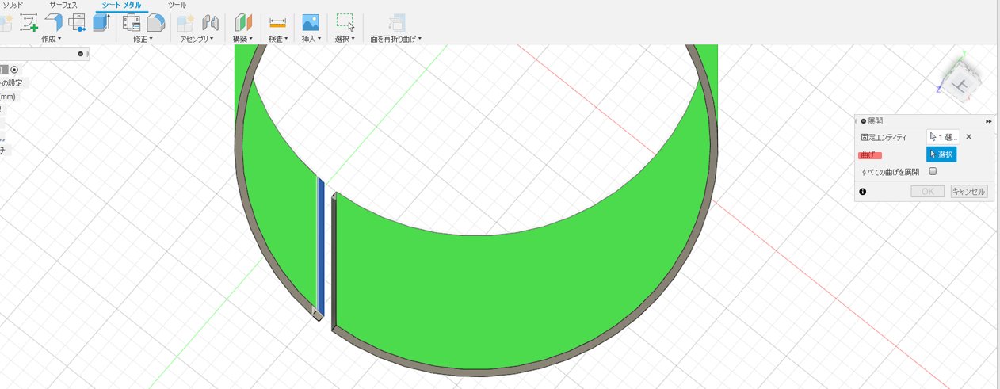
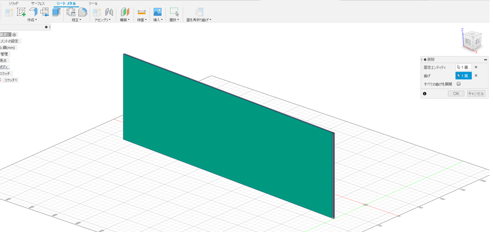

【Open Desing Project】ランプシェード
2021.6.5
まず初めに、今回大変お世話になった動画
メイカーズラブ
【Fusion360の使い方】シートメタル機能を応用して模様の入った指輪を作る方法
URL: https://www.youtube.com/watch?v=vtrquhEl5LI
1.一部分が欠けた円柱を作る
・直径150mmの円を描く
・円の中心から真下に線を引き、その両端に3度ずつの線を引く
 ・線を引いた部分をトリムで消す
・線を引いた部分をトリムで消す・「シートメタル」➡「フランジ」で先ほどの欠けた円を上に押し出す
(今回は150mm)
・欠けた部分を押し出しで少しだけ伸ばす(押し出された部分は曲線ではなくただの直方体)
※ここで押し出しを行わないと次に行う「展開」の作業ができなくなってしまう
2.1の円柱を展開して模様を描く
・「シートメタル」➡「修正」➡「展開」
・「固定エンティティ」は先ほど押し出した部分(円柱内側)をクリック
 ・「曲げ」の部分は緑色になった部分を選択
 ・展開できました
・この面にキャンバスを利用してデザインを上からなぞります。
・このキャンバスの説明はこちらからどうぞ
 ・矩形状(くけいじょう)パターンを使って同じデザインをバランスよくコピー
・矩形状(くけいじょう)パターンを使って同じデザインをバランスよくコピー
➡「矩形状パターン」とは？・・・選択したスケッチを、長方形状に配列コピーするコマンドのこと！
・全部押し出して切り抜く
・「シートメタル」➡「面を再折り曲げ」で元の円柱に戻す
3.最終仕上げ
・２つの円を描く
①：円柱の最上部(円柱に沿って)
②：①から10mm高い位置(直径85mm)
・①と②をロフトでつなげる
・②の円柱を20mm押し出す
・上の凸部にねじを適用させる
・選択項目「モデル化」のチェックを忘れずに。(ねじ状が適用されなくなります！)

・凸部に電球が入るぐらいの大きさの穴をあける
・円柱側面の欠けた部分を押し出して完成！
糸見啓介